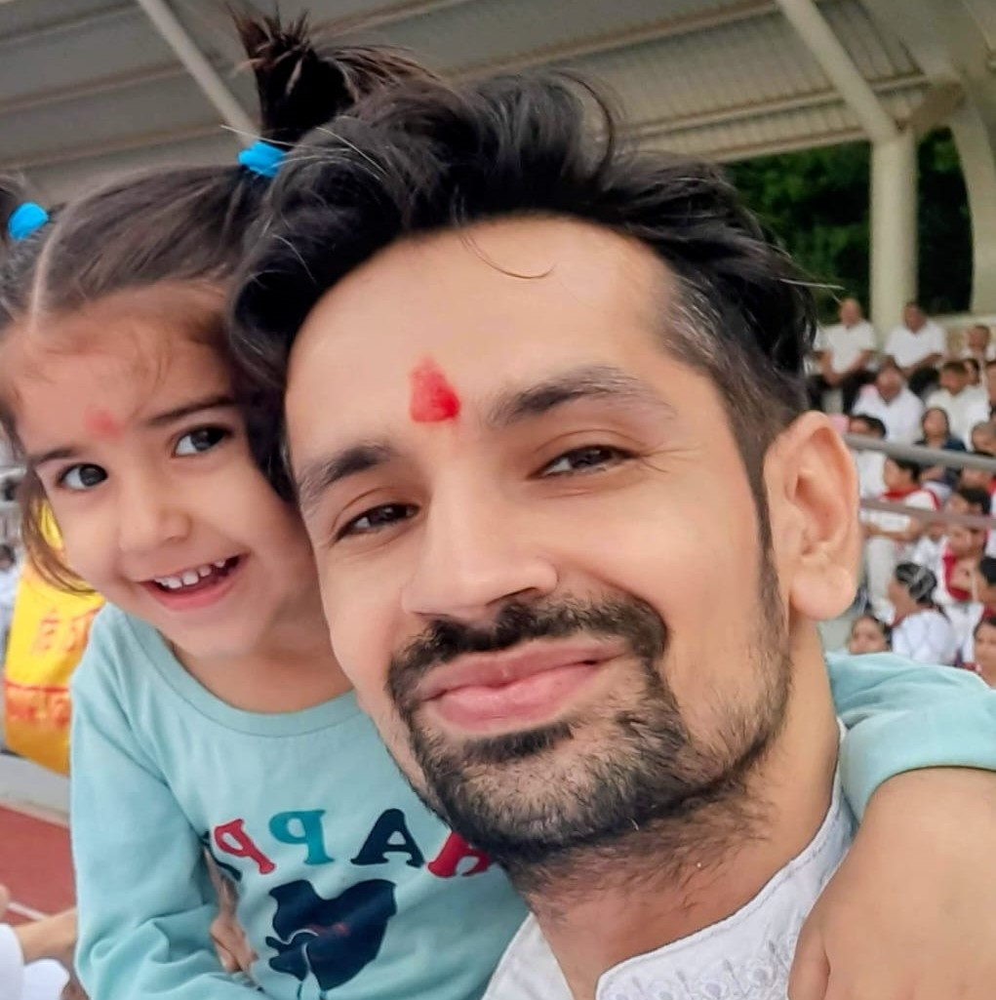

Contact us

Smt.Pooja Vishal Sharma @ +91-9879569353
🌿Sustainable Life Practitioner Living a sustainable lifestyle for the past 18 years Consuming organic & naturally grown food for over 17 years Passionate about serving farmers who are working hard to create a better world Responsible for Research & Development in sustainable farming practices

Shri. Aman Arora @ +91-9953141752
🌿 Passionate about a minimalistic and sustainable lifestyle Actively practicing and exploring sustainable living methods Open to learning and adopting traditional, eco-friendly practices Working with farmers practicing Natural Farming since 2017

Shri. Sekhar Peruri @ +91-9866225756
🌿 Minimalist, sustainable, and simple living Strong believer and practitioner of chemical-free living in all possible ways Skilled in preparation of Panchagavya-based products Promoting Ayurvedic health practices with natural remedies